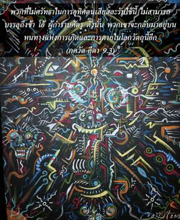
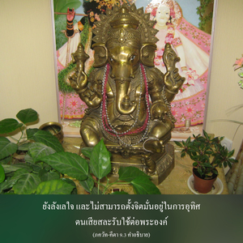

พวกที่ไม่ศรัทธาในการอุทิศตนเสียสละรับใช้นี้ไม่สามารถบรรลุถึงข้า โอ้ ผู้กำราบศัตรู ดังนั้นพวกเขาจะกลับมาอยู่บนหนทางแห่งการเกิดและการตายในโลกวัตถุนี้อีก


ผู้ที่ไม่ศรัทธาจะไม่สามารถประสบผลสำเร็จกับวิธีการอุทิศตนเสียสละรับใช้นี้ และนี่คือคำอธิบายของโศลกนี้ ความศรัทธาเกิดขึ้นจากการมาคบหาสมาคมกับสาวก คนอับโชคแม้หลังจากสดับฟังตามหลักฐานต่างๆ จากบุคลิกภาพผู้ยิ่งใหญ่ในวรรณกรรมพระเวทก็ยังไม่มีความศรัทธาในองค์ภควานฺ ยังลังเลใจ และไม่สามารถตั้งจิตมั่นอยู่ในการอุทิศตนเสียสละรับใช้ต่อพระองค์ ดังนั้น ความศรัทธาเป็นปัจจัยสำคัญที่สุดเพื่อเจริญก้าวหน้าในกฺฤษฺณจิตสำนึก ใน ไจตนฺย-จริตามฺฤต ได้กล่าวไว้ว่า ความศรัทธา คือ ความมั่นใจอย่างสมบูรณ์ว่าจากการรับใช้องค์ภควานฺ ศฺรีกฺฤษฺณ เราจะสามารถบรรลุถึงความสมบูรณ์ทั้งหลายทั้งปวงได้ เช่นนี้เรียกว่าความศรัทธาที่แท้จริง ดังที่ได้กล่าวไว้ใน ศฺรีมทฺ-ภาควตมฺ(4.31.14)
ยถา ตโรรฺ มูล-นิเษจเนน
ตฺฤปฺยนฺติ ตตฺ-สฺกนฺธ-ภุโชปศาขาห์
ปฺราโณปหาราจฺ จ ยเถนฺทฺริยาณำ
ตไถว สรฺวารฺหณมฺ อจฺยุเตชฺยา
“จากการรดน้ำที่รากของต้นไม้จะทำให้กิ่งก้านสาขา และใบต่างๆ ทั้งหมดได้รับความพึงพอใจ และจากการส่งอาหารไปที่ท้องจะทำให้ประสาทสัมผัสต่างๆ ทั้งหมดของร่างกายได้รับความพึงพอใจ ในทำนองเดียวกัน จากการปฏิบัติรับใช้ทิพย์ต่อองค์ภควานฺก็จะทำให้เทวดา และสิ่งมีชีวิตอื่นๆ ทั้งหลายได้รับความพึงพอใจโดยปริยาย” ดังนั้น หลังจากอ่าน ภควัท-คีตา แล้วเราควรมาถึงจุดสรุปของ ภควัท-คีตา ได้ในทันที เราควรยกเลิกการปฏิบัติอื่นๆ ทั้งหมด และรับเอาวิธีการรับใช้ต่อองค์ภควานฺ กฺฤษฺณ มาปฏิบัติ หากมั่นใจเกี่ยวกับปรัชญาชีวิตเช่นนี้ และนี่คือความศรัทธา
การพัฒนาความศรัทธานี้เป็นวิธีการของกฺฤษฺณจิตสำนึก บุคคลในกฺฤษฺณจิตสำนึกแบ่งออกเป็นสามระดับ ในระดับที่สามคือพวกไม่มีความศรัทธา ถึงแม้ปฏิบัติการอุทิศตนเสียสละรับใช้อย่างเป็นทางการ พวกนี้จะไม่สามารถบรรลุถึงระดับแห่งความสมบูรณ์สูงสุด เป็นไปได้อย่างมากว่าหลังระยะเวลาหนึ่งก็จะลื่นไถลตกต่ำลง พวกเขาอาจปฏิบัติรับใช้ แต่เนื่องจากไม่มีความมั่นใจ และไม่มีความศรัทธาอย่างสมบูรณ์ จึงเป็นสิ่งยากมากที่จะปฏิบัติกฺฤษฺณจิตสำนึกอย่างต่อเนื่อง เรามีประสบการณ์ภาคปฏิบัติว่าจากกิจกรรมเพื่อการเผยแพร่กฺฤษฺณจิตสำนึกนั้น บางคนเข้ามา และปฏิบัติในกฺฤษฺณจิตสำนึกด้วยแรงกระตุ้นบางอย่างที่ซ่อนเร้นอยู่ภายในใจ ทันทีที่ฐานะดีขึ้นจะยกเลิกวิธีการปฏิบัตินี้ และไปปฏิบัติตามวิถีทางเดิมอีกครั้งหนึ่ง ความศรัทธาเท่านั้นที่จะทำให้บุคคลเจริญก้าวหน้าในกฺฤษฺณจิตสำนึก เกี่ยวกับการพัฒนาความศรัทธานั้นผู้รอบรู้ในวรรณกรรมแห่งการอุทิศตนเสียสละรับใช้ และบรรลุถึงระดับแห่งความศรัทธาที่มั่นคง เรียกว่า บุคคลชั้นหนึ่งในกฺฤษฺณจิตสำนึก บุคคลชั้นสอง คือ พวกที่ไม่ค่อยเจริญก้าวหน้าเท่าใดนักในการเข้าใจพระคัมภีร์แห่งการอุทิศตนเสียสละ แต่มีความศรัทธาอย่างมั่นคงว่ากฺฤษฺณ-ภกฺติ หรือการรับใช้องค์กฺฤษฺณเป็นวิถีทางที่ดีที่สุด และด้วยความศรัทธาอันแรงกล้าจึงนำไปปฏิบัติ ดังนั้น พวกนี้ดีกว่าบุคคลชั้นสาม ที่ไม่มีทั้งความรู้ในพระคัมภีร์อย่างสมบูรณ์ และไม่มีความศรัทธา แต่เนื่องจากได้มาคบหาสมาคม และจากความเรียบง่ายจึงพยายามปฏิบัติตาม บุคคลชั้นสามในกฺฤษฺณจิตสำนึกอาจตกลงต่ำ แต่บุคคลชั้นสองจะไม่ตกลงต่ำ สำหรับบุคคลชั้นหนึ่ในกฺฤษฺณจิตสำนึก ไม่มีโอกาสที่จะตกลงต่ำได้เลย และแน่นอนว่าจะเจริญก้าวหน้าจนบรรลุผลสำเร็จในที่สุด สำหรับบุคคลชั้นสามในกฺฤษฺณจิตสำนึกถึงแม้ว่าจะมีความศรัทธา และมั่นใจว่าการอุทิศตนเสียสละรับใช้ต่อองค์กฺฤษฺณเป็นสิ่งที่ดีมาก แต่ยังไม่ได้รับความรู้เกี่ยวกับองค์กฺฤษฺณจากพระคัมภีร์ เช่น ศฺรีมทฺ-ภาควตมฺ และ ภควัท-คีตา อย่างเพียงพอ บางครั้งบุคคลชั้นสามในกฺฤษฺณจิตสำนึกมีแนวโน้มไปสู่ กรฺม-โยค และ ชฺญาน-โยค บางครั้งพวกนี้รู้สึกหวั่นไหว แต่ทันทีที่โรคร้ายแห่ง กรฺม-โยค หรือ ชฺญาน-โยค ถูกขจัดไป จะกลายมาเป็นบุคคลชั้นสอง หรือบุคคลชั้นหนึ่งในกฺฤษฺณจิตสำนึก ศฺรีมทฺ-ภาควตมฺ อธิบายว่า ความศรัทธาในองค์กฺฤษฺณแบ่งออกเป็นสามระดับ ใน ศฺรีมทฺ-ภาควตมฺ ภาคสิบเอ็ดได้อธิบายถึงความเชื่อมั่นชั้นหนึ่ง ความเชื่อมั่นชั้นสอง และความเชื่อมั่นชั้นสามไว้เช่นกัน บุคคลผู้ไม่มีศรัทธาแม้หลังจากสดับฟังเกี่ยวกับองค์กฺฤษฺณ และความดีเลิศแห่งการอุทิศตนเสียสละรับใช้ คิดว่าเป็นเพียงถ้อยคำสรรเสริญเท่านั้นจะพบว่าวิถีทางนี้ยากมาก ถึงแม้ดูเหมือนว่าปฏิบัติการอุทิศตนเสียสละรับใช้สำหรับบุคคลเช่นนี้มีความหวังเพียงเล็กน้อยเท่านั้นที่จะบรรลุถึงความสมบูรณ์ ดังนั้น ความศรัทธาจึงเป็นสิ่งสำคัญมากในการปฏิบัติการอุทิศตนเสียสละรับใช้